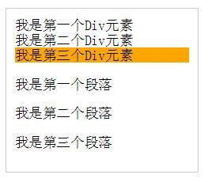
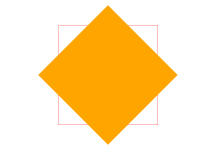

第一章 边框
css样式
圆角效果 border-radius
使用的方法：
圆角矩形
border-radius:10px; /* 所有角都使用半径为10px的圆角 */
width: 100px;height: 100px;border-radius: 10px;
不规则圆角矩形
border-radius: 5px 4px 3px 2px; /* 四个半径值分别是左上角、右上角、右下角和左下角，顺时针 */
width: 100px;height: 100px;border-radius: 5px 4px 3px 2px;
实心上半圆
把高度(height)设为宽度（width）的一半，并且只设置左上角和右上角的半径与元素的高度一致（大于也是可以的）。
height: 50px;width: 100px;border-radius: 50px 50px 0 0;
实心圆
把宽度（width）与高度(height)值设置为一致（也就是正方形），并且四个圆角值都设置为它们值的一半。
height: 100px;width: 100px;background: #9da;border-radius: 50px;
左半圆形
把宽度（width）与高度(height)值设置为一致（也就是正方形），并且左上角和左下角都设置为它们值的一半。
height:100px;width:50px;background:#9da;border-radius:50px 0px 0px 50px;
阴影 box-shadow（一）
box-shadow是向盒子添加阴影。支持添加一个或者多个。
语法：
box-shadow: X轴偏移量 Y轴偏移量 [阴影模糊半径] [阴影扩展半径] [阴影颜色] [投影方式];

注意：inset 可以写在参数的第一个或最后一个，其它位置是无效的。
外阴影
height:100px;width:100px;box-shadow:4px 4px 6px #333333;
内阴影
height: 100px;width: 100px;box-shadow:4px 2px 6px #333333 inset;
添加多个阴影
以上的语法的介绍，就这么简单，如果添加多个阴影，只需用逗号隔开即可。
height: 100px;width: 100px;box-shadow: 4px 2px 6px #f00,-4px -2px 6px #000,0px 0px 12px 5px #3c0 inset;
周围都有阴影
height: 100px;width: 100px;box-shadow:1px 1px 10px rgba(0,0,0,0.5);
阴影 box-shadow（二）
1、阴影模糊半径与阴影扩展半径的区别
阴影模糊半径：此参数可选，其值只能是为正值，如果其值为0时，表示阴影不具有模糊效果，其值越大阴影的边缘就越模糊；
阴影扩展半径：此参数可选，其值可以是正负值，如果值为正，则整个阴影都延展扩大，反之值为负值时，则缩小；
2、X轴偏移量和Y轴偏移量值可以设置为负数
语法：
box-shadow: X轴偏移量 Y轴偏移量 [阴影模糊半径] [阴影扩展半径] [阴影颜色] [投影方式];
X轴为负数实例
height: 100px;width: 100px;box-shadow:-4px 4px 6px #666;
Y轴为负数实例
height: 100px;width: 100px;box-shadow:4px -4px 6px #666;
为边框应用图片 border-image

实例
height:100px;line-height:100px;text-align:center;font-size:30px;width:450px;border:15px solid #ccc; border-image:url(http://img.mukewang.com/52e22a1c0001406e03040221.jpg) 20;
第二章 颜色相关
颜色之RGBA
语法：
color：rgba(R,G,B,A)
以上R、G、B三个参数，正整数值的取值范围为：0 - 255。A为透明度参数，取值在0~1之间，不可为负值。
渐变色彩(渐变背景)
CSS3 Gradient 分为线性渐变(linear)和径向渐变(radial)。

参数：

第三章 文字与字体
text-overflow
用来设置是否使用一个省略标记(...)标示对象内文本的溢出。
语法：

但是text-overflow只是用来说明文字溢出时用什么方式显示，要实现溢出时产生省略号的效果，还须定义强制文本在一行内显示（white-space:nowrap）及溢出内容为隐藏（overflow:hidden），只有这样才能实现溢出文本显示省略号的效果。
- text-overflow:ellipsis;
- overflow:hidden;
- white-space:nowrap;
word-wrap
用来设置文本行为，当前行超过指定容器的边界时是否断开转行。
语法：

normal为浏览器默认值，break-word设置在长单词或 URL地址内部进行换行，此属性不常用，用浏览器默认值即可。
嵌入字体@font-face
@font-face能够加载服务器端的字体文件，让浏览器端可以显示用户电脑里没有安装的字体。
语法：
@font-face {
font-family : "MOOC Font"; //字体名称
src : url("http://www.imooc.com/Amaranth-BoldItalic.otf"); //字体文件在服务器上的相对或绝对路径
}
p {
font-size :12px;
font-family : "My Font"; //必须项，设置@font-face中font-family同样的值
}
文本阴影text-shadow
用来设置文本的阴影效果。
语法：
text-shadow: X-Offset Y-Offset blur color;
- X-Offset：表示阴影的水平偏移距离，其值为正值时阴影向右偏移，反之向左偏移；
- Y-Offset：是指阴影的垂直偏移距离，如果其值是正值时，阴影向下偏移，反之向上偏移；
- Blur：是指阴影的模糊程度，其值不能是负值，如果值越大，阴影越模糊，反之阴影越清晰，如果不需要阴影模糊可以将Blur值设置为0；
- Color：是指阴影的颜色，其可以使用rgba色。
第四章 背景相关的样式
1、元素背景图片的原始起始位置
语法：
background-origin ： border-box | padding-box | content-box;
参数分别表示背景图片是从边框，还是内边距（默认值），或者是内容区域开始显示。
需要注意的是，如果背景不是no-repeat，这个属性无效，它会从边框开始显示。
2、将背景图片做适当的裁剪以适应实际需要
语法：
background-clip ： border-box | padding-box | content-box | no-clip
参数分别表示从边框、或内填充，或者内容区域向外裁剪背景。no-clip表示不裁切，和参数border-box显示同样 的效果。默认值为border-box。
3、以长度值或百分比显示
语法：
background-size: auto | <长度值> | <百分比> | cover | contain
取值说明：
- 1、auto：默认值，不改变背景图片的原始高度和宽度；
- 2、<长度值>：成对出现如200px 50px，将背景图片宽高依次设置为前面两个值，当设置一个值时，将其作为图片宽度值来等比缩放；
- 3、<百分比>：0％~100％之间的任何值，将背景图片宽高依次设置为所在元素宽高乘以前面百分比得出的数值，当设置一个值时同上；
- 4、cover：顾名思义为覆盖，即将背景图片等比缩放以填满整个容器；
- 5、contain：容纳，即将背景图片等比缩放至某一边紧贴容器边缘为止。
4、多重背景
.demo{
width: 300px;
height: 140px;
border: 1px solid #999;
background-image: url(http://img.mukewang.com/54cf2365000140e600740095.jpg),
url(http://img.mukewang.com/54cf238a0001728d00740095.jpg),
url(http://img.mukewang.com/54cf23b60001fd9700740096.jpg);
background-position: left top, 100px 0, 200px 0;
background-repeat: no-repeat, no-repeat, no-repeat;
margin:0 0 20px 0;
}
注意：
- 用逗号隔开每组 background 的缩写值；
- 如果有 size 值，需要紧跟 position 并且用 "/" 隔开；
- 如果有多个背景图片，而其他属性只有一个（例如 background-repeat 只有一个），表明所有背景图片应用该属性值。
- background-color 只能设置一个。
制作导航栏菜单综合练习题
原CSS样式如下：
.nav{
width:560px;
height: 50px;
font:bold 0/50px Arial;
text-align:center;
margin:40px auto 0;
background: #f65f57;
/*制作圆*/
border-radius:10px;
/*制作导航立体风格*/
box-shadow:0px 5px 0px #b64b41;
}
.nav a{
display: inline-block;
-webkit-transition: all 0.2s ease-in;
-moz-transition: all 0.2s ease-in;
-o-transition: all 0.2s ease-in;
-ms-transition: all 0.2s ease-in;
transition: all 0.2s ease-in;
}
.nav a:hover{
-webkit-transform:rotate(10deg);
-moz-transform:rotate(10deg);
-o-transform:rotate(10deg);
-ms-transform:rotate(10deg);
transform:rotate(10deg);
}
.nav li{
position:relative;
display:inline-block;
padding:0 16px;
font-size: 13px;
text-shadow:1px 2px 4px rgba(0,0,0,.5);
list-style: none outside none;
}
/*使用伪元素制作导航列表项分隔线*/
.nav li{
background: #f65f57 no-repeat right/ 1px 15px linear-gradient(to right, #dd2926,#a82724);
}
/*删除第一项和最后一项导航分隔线*/
.nav li:last-child {
background:none;
}
.nav a,
.nav a:hover{
color:#fff;
text-decoration: none;
}
第五章 CSS3选择器
1、属性选择器
在HTML中，通过各种各样的属性可以给元素增加很多附加的信息。例如，通过id属性可以将不同div元素进行区分。
属性选择器如下表所示：

例子：
我的背景想变成红色 我的背景想变成红色我的背景想变成绿色 我的背景想变成绿色
我的背景想变成蓝色 我的背景想变成蓝色
链接按钮是：
<a href="##" class="columnNews">我的背景想变成红色</a>
<a href="##" class="columnVideo">我的背景想变成红色</a><br />
<a href="1.doc">我的背景想变成绿色</a>
<a href="2.doc">我的背景想变成绿色</a><br/>
<a href="##" title="this is a box">我的背景想变成蓝色</a>
<a href="##" title="box1">我的背景想变成蓝色</a>
用属性选择器的CSS样式：
a[class^=column]{
background: #FF0000;
margin-left: 100px;
color: #000;
}
a[href$=doc]{
background: #7FFF00;
margin-left: 100px;
color: #000;
}
a[title*=box]{
background: #00FFFF;
margin-left: 100px;
color: #000;
}
2、结构性伪类选择器1
:root 选择器，从字面上我们就可以很清楚的理解是根选择器，他的意思就是匹配元素E所在文档的根元素。在HTML文档中，根元素始终是<html>。
“:root”选择器等同于元素，简单点说：
:root{background:orange}
html {background:orange;}
得到的效果等同。
3、结构性伪类选择器2
:not 选择器称为否定选择器，和jQuery中的:not选择器一模一样，可以选择除某个元素之外的所有元素。
HTML代码：
<div id="header">页头</div>
<div id="page">页体</div>
<div id="footer">页脚</div>
除页脚”div#footer”之外的所有div设置css代码：
div:not([id="footer"]){
background: orange;
}
结果：

4、结构性伪类选择器3
:empty 选择器表示的就是空。用来选择没有任何内容的元素，这里没有内容指的是一点内容都没有，哪怕是一个空格。
HTML代码：
<div>我这里有内容</div>
<div> <!-- 我这里有一个空格 --></div>
<div></div><!-- 我这里任何内容都没有 -->
给空的div元素添加1px的绿色边框css代码：
div:empty {
border: 1px solid green;
}
结果：
5、结构性伪类选择器4
:target 选择器称为目标选择器，用来匹配文档(页面)的url的某个标志符的目标元素。
HTML代码：
<h2><a href="#brand">Brand</a></h2>
<p>content for Brand</p>
当你点击链接后，段落p将添加橙色背景和白色文字css代码：
:target p {
background: orange;
color: #fff;
}
结果：
6、结构性伪类选择器5
“:first-child” 选择器表示的是选择父元素的第一个子元素的元素E。简单点理解就是选择元素中的第一个子元素，记住是子元素，而不是后代元素。
HTML代码：
<ul>
<li><a href="##">Link1</a></li>
<li><a href="##">Link2</a></li>
<li><a href="##">Link3</a></li>
</ul>
将无序列表的第一个项目符号设置为红色css代码：
ul > li:first-child {
color: red;
}
结果：
7、结构性伪类选择器6
“:last-child”选择器与“:first-child”选择器作用类似，不同的是“:last-child”选择器选择的是元素的最后一个子元素。
HTML代码：
<ul>
<li>Item1</li>
<li>Item2</li>
<li>Item3</li>
<li>Item5</li>
<li>Item6</li>
</ul>
删除列表中最后一个列表项的底部边框css代码：
ul {
border: 1px solid #ccc;
list-style: none outside none;
width: 220px;
margin: 20px auto;
padding: 0;
}
ul > li {
list-style: none outside none;
margin:0;
padding: 10px;
border-bottom: 3px solid #ccc;
}
ul > li:last-child {
border-bottom: none;
}
结果：
8、结构性伪类选择器7
“:nth-child(n)”选择器用来定位某个父元素的一个或多个特定的子元素。其中“n”是其参数，而且可以是整数值(1,2,3,4)，也可以是表达式(2n+1、-n+5)和关键词(odd、even)，但参数n的起始值始终是1，而不是0。也就是说，参数n的值为0时，选择器将选择不到任何匹配的元素。
经验与技巧:当“:nth-child(n)”选择器中的n为一个表达式时，其中n是从0开始计算，当表达式的值为0或小于0的时候，不选择任何匹配的元素。如下表所示：

HTML代码：
<ol>
<li>item1</li>
<li>item2</li>
<li>item3</li>
<li>item4</li>
<li>item5</li>
</ol>
让奇数行背景色变成绿色css代码：
ol > li:nth-child(2n-1){
background: #7FFF00;
}
结果：
9、结构性伪类选择器8
“:nth-last-child(n)”选择器和前面的“:nth-child(n)”选择器非常的相似，只是这里多了一个“last”，所起的作用和“:nth-child(n)”选择器有所区别，从某父元素的最后一个子元素开始计算，来选择特定的元素。
HTML代码：
<ol>
<li>item1</li>
<li>item2</li>
<li>item3</li>
<li>item4</li>
<li>item5</li>
<li>item6</li>
<li>item7</li>
<li>item8</li>
<li>item9</li>
<li>item10</li>
</ol>
修改列表倒数第五项的背景色为橙色css代码：
ol > li:nth-last-child(5){
background: orange;
}
结果：
10、first-of-type选择器
“:first-of-type”选择器类似于“:first-child”选择器，不同之处就是指定了元素的类型,其主要用来定位一个父元素下的某个类型的第一个子元素。
HTML代码：
<div class="wrapper">
<p>我是第一个段落</p>
<p>我是第二个段落</p>
<div>我是第一个Div元素</div>
<div>我是第二个Div元素</div>
<p>我是第三个段落</p>
<p>我是第四个段落</p>
<div>我是第三个Div元素</div>
<div>我是第四个Div元素</div>
</div>
将容器“div.wrapper”中的第一个div元素背景设置为橙色css代码：
.wrapper {
border: 1px solid #ccc;
padding: 10px;
width: 200px;
margin: 20px auto;
}
.wrapper > p,
.wrapper > div {
margin: 10px 0;
background: green;
color: #fff;
padding: 5px;
}
.wrapper > div:first-of-type {
background: orange;
}
结果：
11、nth-of-type(n)选择器
“:nth-of-type(n)”选择器和“:nth-child(n)”选择器非常类似，不同的是它只计算父元素中指定的某种类型的子元素。
HTML代码：
<div class="wrapper">
<div>我是一个Div元素</div>
<p>我是一个段落元素</p>
<div>我是一个Div元素</div>
<p>我是一个段落</p>
<div>我是一个Div元素</div>
<p>我是一个段落</p>
<div>我是一个Div元素</div>
<p>我是一个段落</p>
<div>我是一个Div元素</div>
<p>我是一个段落</p>
<div>我是一个Div元素</div>
<p>我是一个段落</p>
<div>我是一个Div元素</div>
<p>我是一个段落</p>
<div>我是一个Div元素</div>
<p>我是一个段落</p>
</div>
将容器“div.wrapper”中的第一个div元素背景设置为橙色css代码：
.wrapper {
border: 1px solid #ccc;
padding: 10px;
width: 200px;
margin: 20px auto;
}
.wrapper > div:nth-of-type(2n-1),
.wrapper > p:nth-of-type(2n){
background: orange;
}
/*或者*/
.wrapper > div:nth-of-type(odd),
.wrapper > p:nth-of-type(even){
background: orange;
}
结果：
11、last-of-type选择器
“:last-of-type”选择器和“:first-of-type”选择器功能是一样的，不同的是他选择是父元素下的某个类型的最后一个子元素。
HTML代码：
<div class="wrapper">
<div>我是第一个Div元素</div>
<div>我是第二个Div元素</div>
<div>我是第三个Div元素</div>
<p>我是第一个段落</p>
<p>我是第二个段落</p>
<p>我是第三个段落</p>
</div>
将容器“div.wrapper”中最后一个Div元素背景设置为橙色css代码：
.wrapper {
border: 1px solid #ccc;
padding: 10px;
width: 200px;
margin: 20px auto;
}
.wrapper > div:last-of-type{
background: orange;
}
结果：

12、nth-last-of-type(n)选择器
“:nth-last-of-type(n)”选择器和“:nth-of-type(n)”选择器是一样的，选择父元素中指定的某种子元素类型，但它的起始方向是从最后一个子元素开始，而且它的使用方法类似于上节中介绍的“:nth-last-child(n)”选择器一样。
HTML代码：
<div class="wrapper">
<p>我是第一个段落</p>
<p>我是第二个段落</p>
<div>我是第一个Div元素</div>
<div>我是第二个Div元素</div>
<div>我是第三个Div元素</div>
<p>我是第三个段落</p>
<p>我是第四个段落</p>
<p>我是第五个段落</p>
<div>我是第四个Div元素</div>
<div>我是第五个Div元素</div>
<p>我是第六个段落</p>
</div>
将容器“div.wrapper”中倒数第五个Div元素背景设置为橙色css代码：
.wrapper {
border: 1px solid #ccc;
padding: 10px;
width: 200px;
margin: 20px auto;
}
.wrapper > div:nth-last-of-type(5){
background: orange;
}
结果：
13、only-child选择器
“:only-child”选择器选择的是父元素中只有一个子元素，而且只有唯一的一个子元素。也就是说，匹配的元素的父元素中仅有一个子元素，而且是一个唯一的子元素。
HTML代码：
<ul>
<li>我是多个li</li>
<li>我是多个li</li>
<li>我是多个li</li>
</ul>
<ul>
<li>我是一个li</li>
</ul>
<ol>
<li>我是一个li</li>
</ol>
<ol>
<li>我是多个li</li>
<li>我是多个li</li>
<li>我是多个li</li>
</ol>
通过“:only-child”选择器，改变只有一个列表项的背景色为橙色css代码：
ol,ul {
width: 200px;
margin: 1px auto;
}
li {
background: green;
padding: 10px;
margin-bottom: 5px;
}
li:only-child {
background: orange;
}
结果：
13、only-of-type选择器
“:only-of-type”选择器用来选择一个元素是它的父元素的唯一一个相同类型的子元素。这样说或许不太好理解，换一种说法。“:only-of-type”是表示一个元素他有很多个子元素，而其中只有一种类型的子元素是唯一的，使用“:only-of-type”选择器就可以选中这个元素中的唯一一个类型子元素。
HTML代码：
<div class="wrapper">
<p>我是一个段落</p>
<p>我是一个段落</p>
<p>我是一个段落</p>
</div>
<div class="wrapper">
<p>我是一个段落</p>
</div>
<div class="wrapper">
<div>我是一个Div元素</div>
<p>我是一个段落</p>
<div>我是一个Div元素</div>
</div>
将仅有一个P元素的背景修改为橙色css代码：
.wrapper {
border: 1px solid #ccc;
padding: 10px;
width: 200px;
margin: 10px auto;
}
.wrapper p:only-of-type{
background: orange;
}
结果：
第六章 CSS3中的变形与动画
1、变形--旋转 rotate()
旋转rotate()函数通过指定的角度参数使元素相对原点进行旋转。它主要在二维空间内进行操作，设置一个角度值，用来指定旋转的幅度。如果这个值为正值，元素相对原点中心顺时针旋转；如果这个值为负值，元素相对原点中心逆时针旋转。
HTML代码:
<div class="wrapper">
<div></div>
</div>
旋转45°的css代码：
.wrapper {
width: 200px;
height: 200px;
border: 1px dotted red;
margin: 100px auto;
}
.wrapper div {
width: 200px;
height: 200px;
background: orange;
-webkit-transform: rotate(45deg);
transform: rotate(45deg);
}
结果：

2、变形--扭曲 skew()
扭曲skew()函数能够让元素倾斜显示。它可以将一个对象以其中心位置围绕着X轴和Y轴按照一定的角度倾斜。这与rotate()函数的旋转不同，rotate()函数只是旋转，而不会改变元素的形状。skew()函数不会旋转，而只会改变元素的形状。
Skew()具有三种情况：
- skew(x,y)使元素在水平和垂直方向同时扭曲
- skewX(x)仅使元素在水平方向扭曲变形
- skewY(y)仅使元素在垂直方向扭曲变形
HTML代码：
<div class="wrapper">
<div><span>背景扭曲了(●—●)</span></div>
</div>
变成扭曲的平形四边形css代码：
.wrapper {
width: 300px;
height: 100px;
border: 2px dotted red;
margin: 30px auto;
}
.wrapper div {
width: 300px;
height: 100px;
line-height: 100px;
text-align: center;
color: #fff;
background: orange;
-webkit-transform: skew(45deg);
-moz-transform: skew(45deg);
transform:skew(45deg,-10deg);
}
.wrapper span {
display:block;
-webkit-transform: skew(-45deg);
-moz-transform: skew(-45deg);
transform:skew(-45deg,10deg);
}
结果：
3、变形--缩放 scale()
缩放 scale()函数 让元素根据中心原点对对象进行缩放。
缩放 scale 具有三种情况：
- scale(X,Y)使元素水平方向和垂直方向同时缩放
- scaleX(x)元素仅水平方向缩放
- scaleY(y)元素仅垂直方向缩放
HTML代码：
<div class="wrapper">
<div>我将缩小0.8</div>
</div>
让容器的鼠标滑过时的状态缩小0.8倍css代码：
.wrapper {
width: 200px;
height: 200px;
border:2px dashed red;
margin: 100px auto;
}
.wrapper div {
width: 200px;
height: 200px;
line-height: 200px;
background: orange;
text-align: center;
color: #fff;
}
.wrapper div:hover {
opacity: .5;
-webkit-transform: scale(0.8);
-moz-transform: scale(0.8);
transform: scale(0.8);
}
结果：
4、位移，水平居中
translate()函数可以将元素向指定的方向移动，类似于position中的relative。或以简单的理解为，使用translate()函数，可以把元素从原来的位置移动，而不影响在X、Y轴上的任何Web组件。
translate我们分为三种情况：
- translate(x,y)水平方向和垂直方向同时移动
- translateX(x)仅水平方向移动
- translateY(Y)仅垂直方向移动
HTML代码：
<div class="wrapper">
我要实现水平垂直居中
</div>
让元素实现水平、垂直居中css代码：
.wrapper {
padding: 20px;
background:orange;
color:#fff;
position:absolute;
top:50%;
left:50%;
border-radius: 5px;
-webkit-transform:translate(-50%,-50%);
-moz-transform:translate(-50%,-50%);
transform:translate(-50%,-50%);
}
结果：
5、矩阵 matrix()
matrix() 是一个含六个值的(a,b,c,d,e,f)变换矩阵，用来指定一个2D变换，相当于直接应用一个[a b c d e f]变换矩阵。就是基于水平方向（X轴）和垂直方向（Y轴）重新定位元素,此属性值使用涉及到数学中的矩阵，我在这里只是简单的说一下CSS3中的transform有这么一个属性值，如果需要深入了解，需要对数学矩阵有一定的知识。
6、原点 transform-origin
在没有重置transform-origin改变元素原点位置的情况下，CSS变形进行的旋转、位移、缩放，扭曲等操作都是以元素自己中心位置进行变形。但很多时候，我们可以通过transform-origin来对元素进行原点位置改变，使元素原点不在元素的中心位置，以达到需要的原点位置。
transform-origin取值如下表所示:

7、过渡属性 transition-property
在CSS中创建简单的过渡效果可以从以下几个步骤来实现：
- 第一，在默认样式中声明元素的初始状态样式；
- 第二，声明过渡元素最终状态样式，比如悬浮状态；
- 第三，在默认样式中通过添加过渡函数，添加一些不同的样式。
CSS3的过度transition属性是一个复合属性，主要包括以下几个子属性：
- transition-property:指定过渡或动态模拟的CSS属性
- transition-duration:指定完成过渡所需的时间
- transition-timing-function:指定过渡函数
- transition-delay:指定开始出现的延迟时间
transition-property用来指定过渡动画的CSS属性名称，而这个过渡属性只有具备一个中点值的属性（需要产生动画的属性）才能具备过渡效果，其对应具有过渡的CSS属性主要有：

HTML代码：
<div class="aa"></div>
让容器在hover状态下宽度从200px慢慢过渡到400px样子的css代码：
.aa {
width: 200px;
height: 200px;
background: red;
margin: 20px auto;
-webkit-transition-property: width;
transition-property: width;
-webkit-transition-duration:.5s;
transition-duration:.5s;
-webkit-transition-timing-function: ease-in;
transition-timing-function: ease-in;
-webkit-transition-delay: .18s;
transition-delay:.18s;
}
.aa:hover {
width: 400px;
}
结果：
特别注意：当“transition-property”属性设置为all时，表示的是所有中点值的属性。
8、过渡所需时间 transition-duration
transition-duration属性主要用来设置一个属性过渡到另一个属性所需的时间，也就是从旧属性过渡到新属性花费的时间长度，俗称持续时间。
HTML代码：
<div class="bb"></div>
让容器高度从200px慢慢过渡到100px，并且整个过渡持续1s的CSS代码：
.bb {
width: 300px;
height: 200px;
background-color: orange;
margin: 20px auto;
-webkit-transition-property: height;
transition-property: height;
-webkit-transition-duration: 1s;
transition-duration: 1s;
-webkit-transition-timing-function: ease-out;
transition-timing-function: ease-out;
-webkit-transition-delay: .2s;
transition-delay: .2s;
}
.bb:hover {
height: 100px;
}
结果：
9、过渡函数 transition-timing-function
transition-timing-function属性指的是过渡的“缓动函数”。主要用来指定浏览器的过渡速度，以及过渡期间的操作进展情况，其中要包括以下几种函数：

HTML代码：
<div class="cc"></div>
让容器在hover状态下，从圆形慢慢过渡到矩形，而且过渡动画速度是恒速，也就是linear的css代码：
.cc {
width: 200px;
height: 200px;
background-color: orange;
margin: 20px auto;
border-radius: 100%;
-webkit-transition-property: -webkit-border-radius;
transition-property: border-radius;
-webkit-transition-duration: 1s;
transition-duration: 1s;
-webkit-transition-timing-function:linear;
transition-timing-function:linear;
-webkit-transition-delay: .2s;
transition-delay: .2s;
}
.cc:hover {
border-radius: 0px;
}
结果：
10、过渡延迟时间 transition-delay
transition-delay属性和transition-duration属性极其类似，不同的是transition-duration是用来设置过渡动画的持续时间，而transition-delay主要用来指定一个动画开始执行的时间，也就是说当改变元素属性值后多长时间开始执行。
HTML代码：
<div class="wrapper">
<div>鼠标放到我的身上来</div>
</div>
让容器从正方形渐显效果慢慢过渡到圆角的css代码：
.dd {
width: 400px;
height: 200px;
margin: 20px auto;
border: 2px dotted red;
position:relative;
}
.dd div {
padding: 15px 20px;
color: #fff;
background-color: orange;
position: absolute;
top: 50%;
left:50%;
-webkit-transform: translate(-50%,-50%);
transform: translate(-50%,-50%);
-webkit-transition: all .5s ease-in .2s;
transition: all .5s ease-in .2s;
}
.dd div:hover {
background-color: red;
border-radius: 10px;
}
结果：
鼠标放到我的身上来
11、Keyframes介绍
Keyframes被称为关键帧，其类似于Flash中的关键帧。在CSS3中其主要以“@keyframes”开头，后面紧跟着是动画名称加上一对花括号“{…}”，括号中就是一些不同时间段样式规则。
在一个“@keyframes”中的样式规则可以由多个百分比构成的，如在“0%”到“100%”之间创建更多个百分比，分别给每个百分比中给需要有动画效果的元素加上不同的样式，从而达到一种在不断变化的效果。
经验与技巧：在@keyframes中定义动画名称时，其中0%和100%还可以使用关键词from和to来代表，其中0%对应的是from，100%对应的是to。
HTML代码：
<div class="ee">鼠标放在我身上</div>
创建一个动画名叫“changecolor”，在“0%”时背景色为red,在20%时背景色为blue，在40%背景色为orange，在60%背景色
为green，在80%时背景色yellow，在100%处时背景色为red的css代码：
@keyframes changecolor{
0%{
background: red;
}
20%{
background:blue;
}
40%{
background:orange;
}
60%{
background:green;
}
80%{
background:yellow;
}
100%{
background: red;
}
}
div {
width: 300px;
height: 200px;
background: red;
color:#fff;
margin: 20px auto;
}
div:hover {
animation: changecolor 5s ease-out .2s;
}
结果：
鼠标放在我身上
12、调用动画
animation-name属性主要是用来调用 @keyframes 定义好的动画。需要特别注意: animation-name 调用的动画名需要和“@keyframes”定义的动画名称完全一致（区分大小写），如果不一致将不具有任何动画效果。
语法：
animation-name: none | IDENT[,none|DENT]*;
1、IDENT是由 @keyframes 创建的动画名，上面已经讲过了（animation-name 调用的动画名需要和“@keyframes”定义
的动画名称完全一致）；
2、none为默认值，当值为 none 时，将没有任何动画效果,这可以用于覆盖任何动画。
注意：需要在 Chrome 和 Safari 上面的基础上加上-webkit-前缀，Firefox加上-moz-。
HTML代码：
<div><span></span></div>
调用定义的动画“around”的css代码：
@keyframes around{
0% {
transform: translateX(0);
}
25%{
transform: translateX(180px);
}
50%{
transform: translate(180px, 180px);
}
75%{
transform:translate(0,180px);
}
100%{
transform: translateY(0);
}
}
.ff {
width: 200px;
height: 200px;
border: 1px solid red;
margin: 20px auto;
}
.ff span {
display: inline-block;
width: 20px;
height: 20px;
background: orange;
border-radius: 100%;
animation-name:around;
animation-duration: 10s;
animation-timing-function: ease;
animation-delay: 1s;
animation-iteration-count:infinite;
}
结果：
13、设置动画播放时间
animation-duration主要用来设置CSS3动画播放时间，其使用方法和transition-duration类似，是用来指定元素播放动画所持续的时间长，也就是完成从0%到100%一次动画所需时间。单位：S秒
语法规则：
animation-duration: <time>[,<time>]*
取值<time>为数值，单位为秒，其默认值为“0”，这意味着动画周期为“0”，也就是没有动画效果（如果值为负值会被视为“0”）。
HTML代码：
<div class="gg">Hover Me</div>
让元素从红色变化到绿色，整个变化过程持续5s时间css代码：
@keyframes changeColor {
from {
background: red;
}
to {
background:green;
}
}
.gg {
width: 200px;
height: 200px;
background: red;
text-align:center;
margin: 20px auto;
line-height: 200px;
color: #fff;
}
.gg:hover {
animation-name: changeColor;
animation-duration: 5s;
animation-timing-function: ease-out;
animation-delay: .1s;
}
结果：
Hover Me
14、设置动画播放方式
animation-timing-function属性主要用来设置动画播放方式。主要让元素根据时间的推进来改变属性值的变换速率，简单点说就是动画的播放方式。